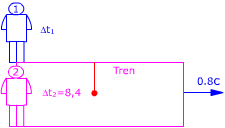

a)  Observador 1 (Estación): Observador 2 (Tren) Aplicando la conversión de tiempos resulta: $$\begin{aligned} &\Delta t_1=\frac{\Delta t_2}{\gamma}\\[6pt] &\gamma=\sqrt{1-\left(\frac{v}{c}\right)^{2}}=\sqrt{1-\left(\frac{0{,}8\,c}{c}\right)^{2}}=0{,}6\\[6pt] &\Delta t=\frac{8{,}4\ \mathrm{s}}{0{,}6}=14\ \mathrm{s} \end{aligned}$$ Para el observador en la estación el período del péndulo es de 14 s (Dura más que en el tren) |